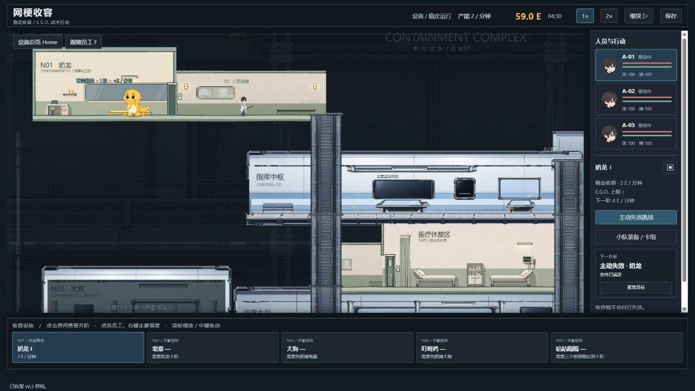
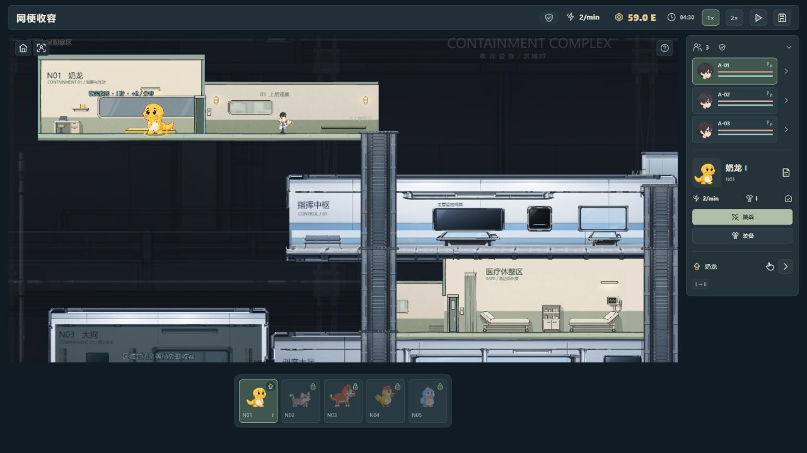
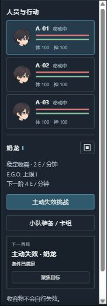
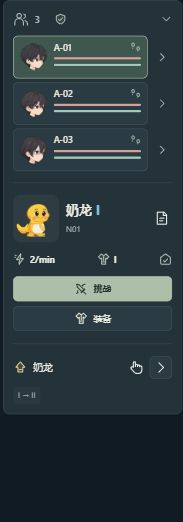
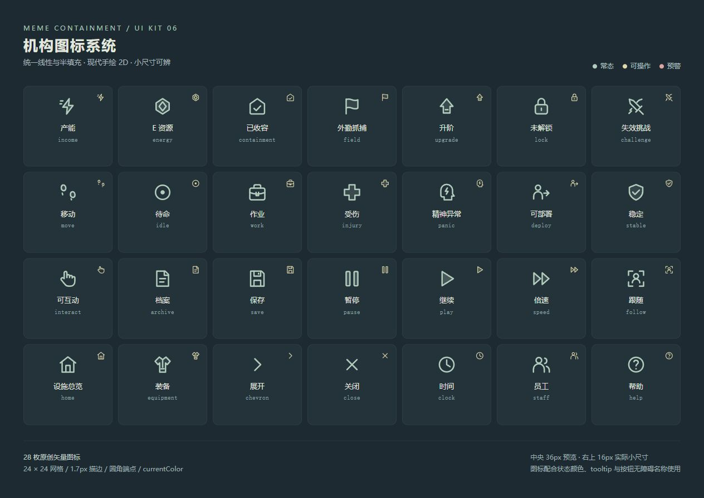
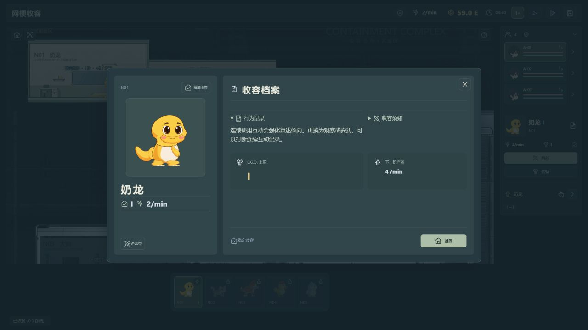
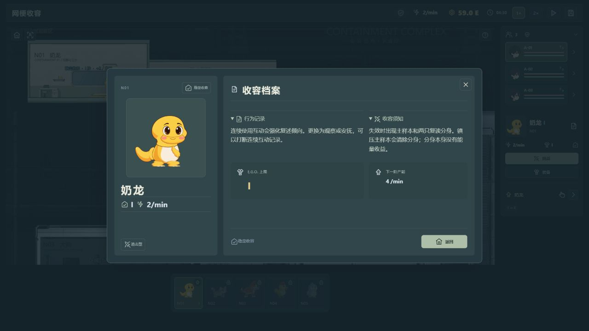
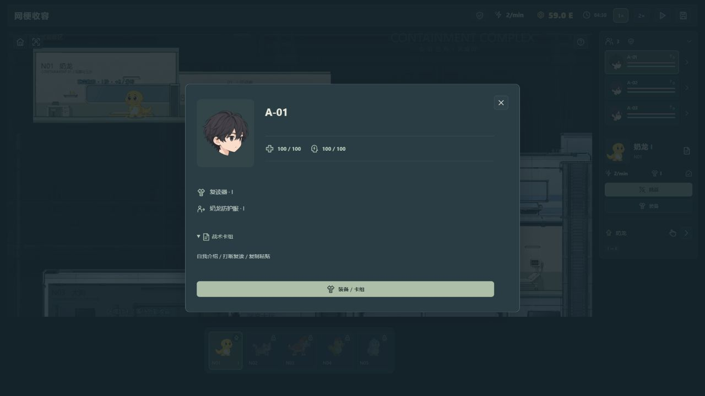
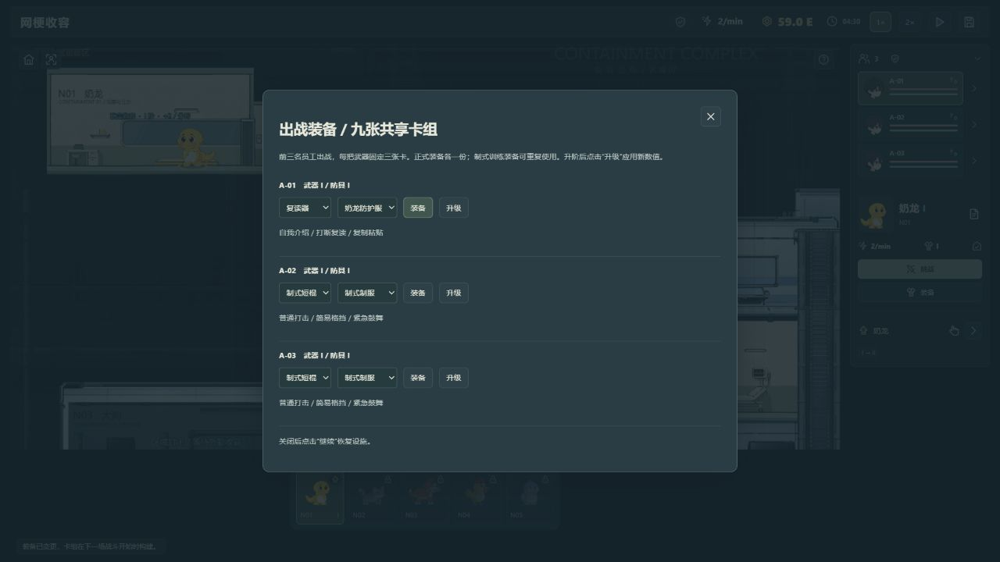
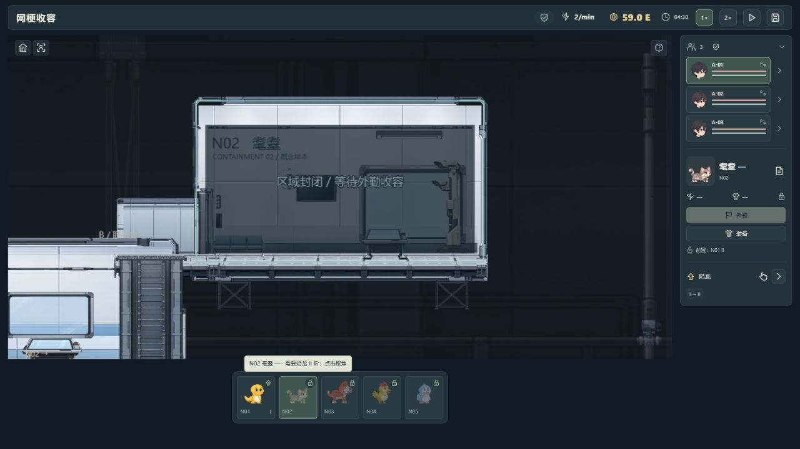

03 / 底部收容导航
以头像、编号、阶级和状态徽记组织五个收容物。未解锁项目保留锁定状态，条件可进一步查看。
在现有基地样板上整理顶栏、员工概览和收容导航，用统一图标与短标签减少常驻文字。保留玩法与功能入口。
统计范围：主界面可见 DOM 文本；排除 toast、modal、闭合 details、tooltip 和 canvas。条目与字符按同一口径比较，图标、画布文字及二级详情不计入。优化前记录 · 优化后记录
同为 1280 × 720、04:30 暂停、N01 I 的对照场景。基地仍是画面主体，资源和常用操作集中在轻量 HUD 中。


点击任意截图可查看原图。以下两组为对应界面区域的裁切对照。
员工状态、当前收容物与下一目标分别表达；档案、装备和卡组仍有入口，详细说明进入二级页面。


以头像、编号、阶级和状态徽记组织五个收容物。未解锁项目保留锁定状态，条件可进一步查看。
28 枚原创 SVG，统一 24px 网格、1.7px 圆角描边及线性 / 半填充语言。图标继承状态色，配合 tooltip 和无障碍名称使用。

主界面收起说明后，档案、收容须知、员工数值和装备信息仍可查看。下图为实际页面展示，不代表完整战斗流程验收。




